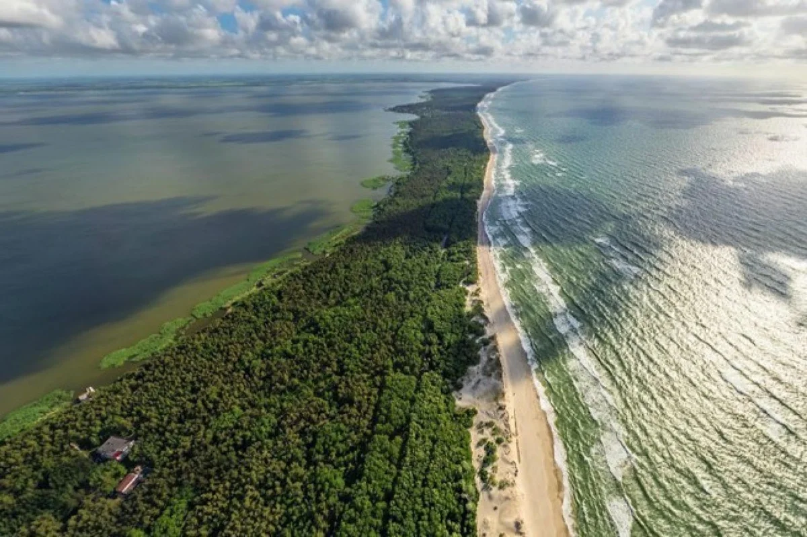
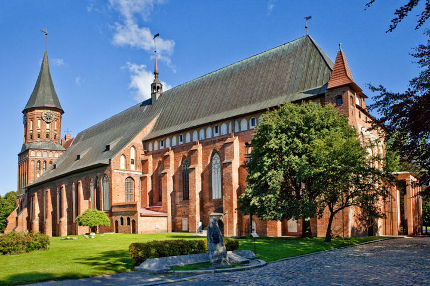
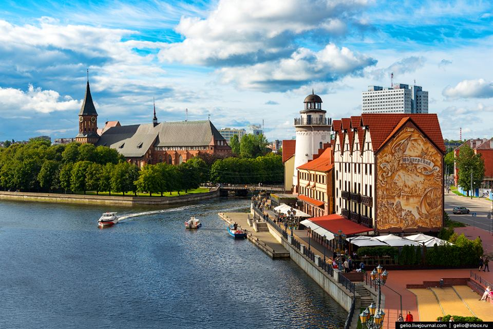
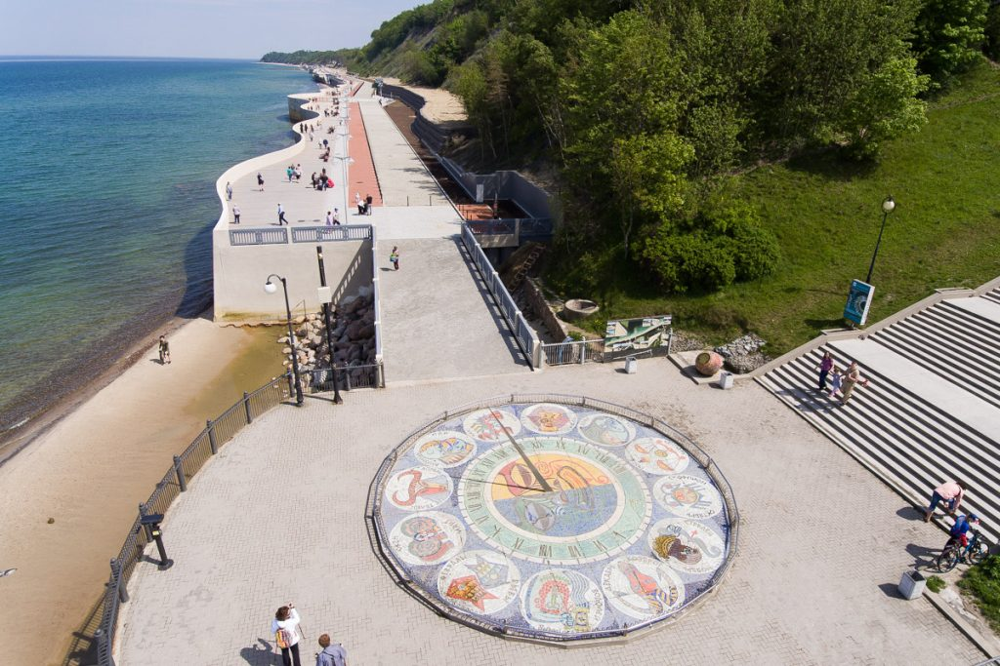
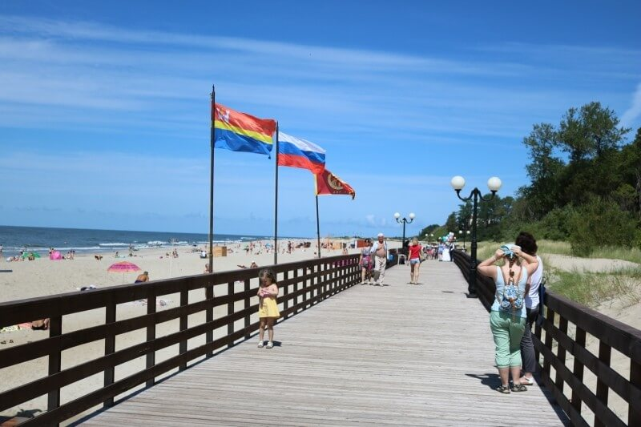
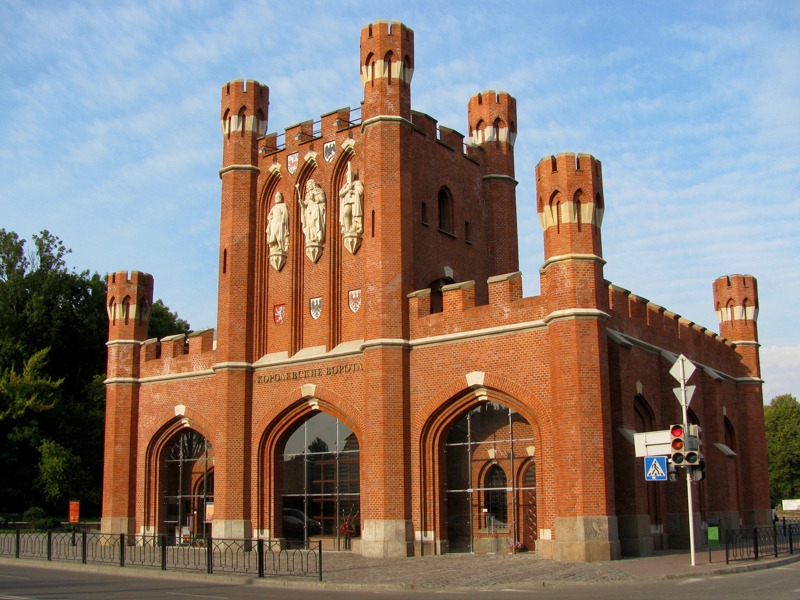
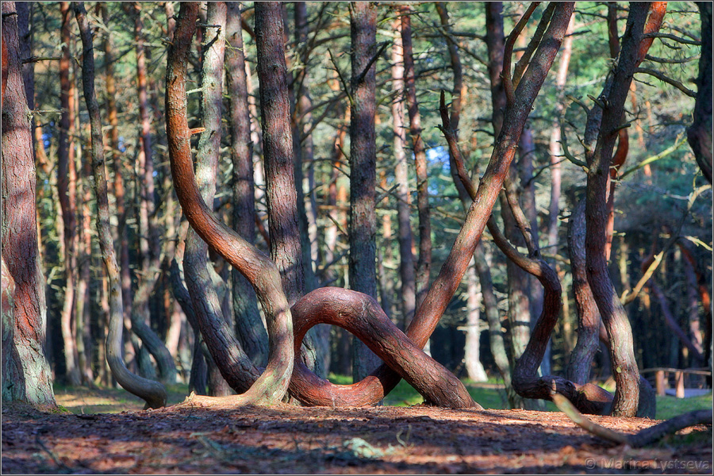
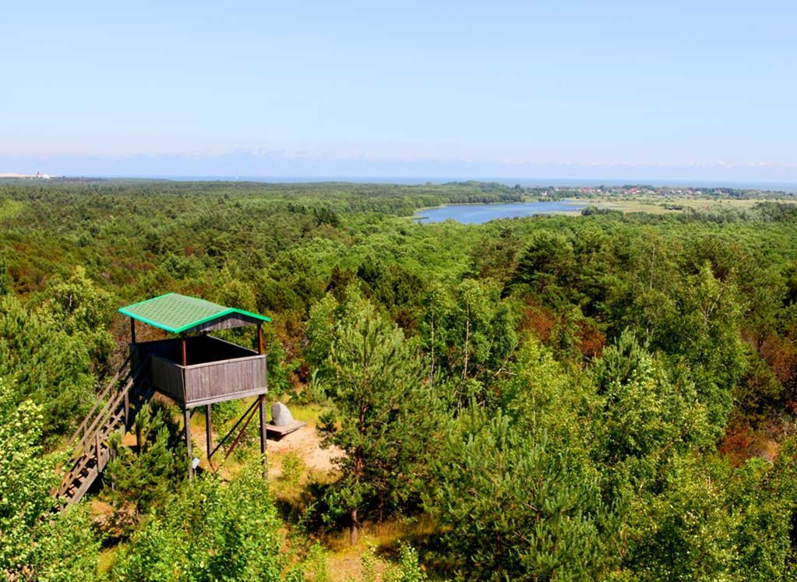

Самые интересные и красивые места региона
Калининградская область – уникальное территориальное образование, так называемый эксклав: при отсутствии сухопутной границы имеет сообщение с Россией морем. Основными владельцами ранее были немцы, плотно обосновавшиеся после захвата Пруссии Тевтонским орденом. Германское наследие присутствует везде: от архитектуры городов до разбросанных по области старинных фортов./
Здесь развит исторический туризм, связанный с событиями давнего прошлого и последней мировой войны. Приморское расположение и обилие озер в сочетании с мягким климатом гарантируют превосходный пляжный отдых и незабываемую рыбалку. Для любителей дикого туризма найдется масса укромных мест, а предпочитающие традиционный курортный отдых легко подберут место в гостинице или на турбазе.
Национальный парк «Куршская коса»
Уникальное природно-антропогенное образование, ставшее в 2000 году объектом всемирного наследия. Объект 98 километров длиной при ширине 400-3800 метров собравший несколько абсолютно разных ландшафтов: от тундрового болота до песчаной пустыни. Приезжают сюда понаблюдать за перелетом птиц и посетить песчаные пляжи: на одной стороне косы – морские, на другой – пресноводного залива.
Кафедральный собор в Калининграде
Этот ныне недействующий храм успел побыть католическим и лютеранским. Один из редких для России представителей готической архитектуры, ставший символом Калининграда. После войны его руины едва не снесли, спасла собор расположенная здесь могила Канта. Восстановление началось в 1992 году, так что все внутреннее убранство и большая часть построек – новодел, однако тщательно восстановленный по довоенным фотоархивам.
Рыбная деревня
Жемчужина Калининграда, обязательная к посещению. Полностью восстановленный в прусском довоенном стиле квартал города, грандиозный историко-этнографический комплекс. Этот кусочек старинного Кёнигсберга сосредоточил сразу несколько музеев, гостиниц, выставочных центров, заведений общепита и мест пеших прогулок. Неудобство одно: обойти все за день просто невозможно, придется задержаться.
Променад и пляж Светлогорска
Набережная Светлогорска не просто укрепленная и облагороженная прибрежная полоса, а настоящий развлекательный комплекс со множеством кафе, концертных площадок и уютных закутков. Полностью перестроен после шторма 2012 года, разрушившего сооружение. Сейчас за променадом намывают пляж и вполне успешно: десяток метров уже отвоеван у суровой Балтики. Основная достопримечательность набережной – несколько скульптурных композиций.
Променад и пляж в Янтарном
Променад в Янтарном уникален: он частично проходит над водой. Два километра деревянного моста из сибирской лиственницы пересекают затопленный янтарный карьер с обитающими там семействами лебедей и упираются в песчаный пляж. Последний полностью благоустроен: от туалетов и кафе до зеленой зоны отдыха, утопающей в листве и настилов для перемещения. Песок белоснежный, на самом пляже царят идеальный порядок, чистота.
Городские ворота Калининграда
Таковых в Калининграде насчитывается аж семь и все – уникальны, хоть и построены в едином готическом стиле. Опоясывают ворота исторический центр города, где ранее проходила крепостная стена. Расстояние между достопримечательностями относительно небольшое, вполне преодолевается пешим порядком. Если нет желания много ходить, можно заказать специальный автобусный тур.
Балтийская коса

Она же – Вислинская, так ее называют поляки, на территории которых 30 км природного объекта из общих 65. Представляет собой песчаные дюны, поросшие смешанным лесом. Российская часть отделена судоходным проливом, так что добираться придется по воде (моторкой или паромом). Туризм здесь преимущественно дикий, хотя турбаза имеется. Приезжают купаться и отдыхать, а также посетить заброшенные немецкие военные объекты.
Виштынецкое озеро

Глубоководное озеро, прозванное «Европейским Байкалом». Воды его изобилуют рыбой, в том числе ценными породами, вроде европейского угря и налима, прибрежные заросли – птицей. По берегам раскиданы несколько баз и лагерей, приезжают сюда порыбачить и просто отдохнуть на диких песчаных пляжах с белоснежным песком. Здесь идеальный пресноводный дайвинг – вода отличается феноменальной прозрачностью.
Танцующий лес
Этот искусственный сосняк близ Куршской косы получил странное название из-за искривленных, порой свернутых спиралью, стволов деревьев. Но ничего сверхъестественного: виной тому гусеницы, повредившие саженцы и спровоцировавшие нестандартный рост. Теперь тысячи деревьев словно исполняют замысловатый танец. Здесь же находятся руины довоенной школы немецких планеристов.
Высота Мюллера
Возвышенность среди лесов Куршской косы названа в честь лесничего Мюллера, придумавшего способ остановить расползание дюн и превращения в песчаную пустыню всей прибрежной территории. В самой высокой точке находится смотровая площадка, с которой можно полюбоваться трудами немца, спасшего уникальную природу края более века назад. Добраться можно автомобилем или из Калининграда рейсовым автобусом до поселка Морское.